用于选择的最简单框架是候选菜单由确定选项组成的那些情形，例如鳄梨和100美元，你必须从中至少选择一项：允许有持平情况。试着回想一下，两个选项持平，即你同等选择这两个选项，相当于说你对两者同等满意。
考虑下面这个明显奇怪的选择：
菜单由芦笋、甜菜根和菊苣组成：你从中选了芦笋。侍者可能是没听清，告诉你说菊苣没有了，于是你选择了甜菜根。你的选择如下图所示。按惯例，用字母ABC表示各个选项：
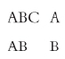
在本例中，你的选择有问题（问题实质上和第一章中三明治的例子是一样的）：你从完整菜单中选择了A，但在A和B之间，你却没有选A。这种做法似乎不对。为了避免类似问题，我们可以规定，如果你从完整菜单中选择了某个选项，在菜单范围缩小后，如果该选项还列在其中，你必须要选择该选项。这一要求称为缩约条件 ，又被称为“森的首要属性”，得名于诺贝尔经济学奖得主、哲学家阿马蒂亚·森（生于1933年）。可以用类似的赛马例子来说明。如果一匹小母马赢了一场同时有小公马和小母马参加的比赛，那么当比赛仅允许小母马参加时，它应该也能赢得比赛。
缩约条件有着明显的所指。假定在你最初的选择中有几个持平选项，随后你从只含有这些持平选项的小范围菜单中再次进行选择。显而易见，缩约条件告诉我们，你的选择不会改变。这也支持了我们允许持平情况出现的做法：如果两个选项持平，就没有理由选择其中一项而不选另外一项。
下一个例子里，另一种问题出现了。
菜单看似由豆汤和胡萝卜汤组成：你从中选择了胡萝卜汤。侍者告诉你，你错把洋蓟当做豆子，所以菜单实际上应该由洋蓟汤和胡萝卜汤组成，你同等选择了两者，也就是说两者持平。侍者又回来告诉你，除了这两种汤，豆汤其实也有，此时你选择洋蓟汤。你的选择如下图所示：
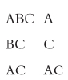
在本例中，你的选择所出现的问题是：你在B和C之间选择C，同时也在A和C之间选择C（尽管不是只选C），但你没有从完整的菜单中选择C。这一次，你的选择看来仍然不对。如果菜单只包含两个选项，你从中选择了第一项（尽管不一定是唯一选项），我会说你在一次成对 选择中选了该选项。为了避免类似汤的例子中遇到的问题，我们要求如果在所有包含某个选项的成对选择中，你都选择了该选项，那么你从完整的菜单中也应该选择这个选项（尽管不一定是唯一的）。这一要求被称为扩展条件 ，又被称为“孔多塞条件”，得名于法国数学家、启蒙运动的重要人物马里耶·让·安托万·尼古拉斯·卡利塔特·德·孔多塞侯爵（1743—1794）。以赛马为例，如果一匹小母马在一对一赛跑中击败其他任何一匹母马，那么她应该在一场由她和所有被击败的母马参加的比赛中胜出。
我们应该确保这两个条件是一致的，即它们可以同时被满足；另外，这两个条件是独立的，即没有任何一个条件隐含另一个。最简单的方法就是举出几个例子，例一两个条件都满足，例二满足条件一，例三满足条件二。要证明某个例子不满足某个条件，我们只要找到一种不满足的情况即可。但是，要证明它满足某个条件，我们就必须证明它在所有情况下都满足，也就是说，所有可能的菜单中的选择都满足该条件。
下面是一个同时满足两个条件的例子（即便如此，正如我们将看到的，其中所作的选择仍需进一步补充条件）。
菜单由凤尾鱼、鲈鱼和鳕鱼组成：你从中选择了凤尾鱼。但如果菜单缩减到只含凤尾鱼和鲈鱼，你同等选择两者；如果菜单减到只含鲈鱼和鳕鱼，你选择鳕鱼；如果只含凤尾鱼和鳕鱼，你选择凤尾鱼。如下图所示：
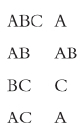
注意，本例列举了你从所有可能的菜单（除了那些无足轻重的）中所作的选择。不管是从完整菜单，还是从任何含有A的削减菜单中，你都选择A，因此本例满足缩约条件。同时，A是你在进行由A和其他选项构成的成对选择中所挑选的唯一一个选项，因此本例也满足扩展条件。
我们可以用汤的例子来说明满足缩约条件但不满足扩展条件的情况，只要我们在原来的例子上再加上一条规定：在A和B之间，你选择A。你的选择变成：
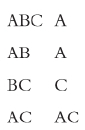
现在，你从完整菜单中，同时也从所有含有A的削减菜单中，都选择了A，因此本例满足缩约条件。但是，本例的关键在于没有满足扩展条件：在成对选择时，你选择了C（尽管不是唯一的），但你却没有从完整菜单中选择C。
同样，我们可以用开胃菜的例子来说明满足扩展条件，但不满足缩约条件的情况。只要我们在原来的例子中再加上一条规定：在B和C之间，你选择C；且在A和C之间，你选择A。你的选择变成：
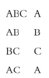
现在，你在成对选择时没有选出任何一项，因此可以默认扩展条件满足。（回忆一下，扩展条件要求，如果你在成对选择时选出某个选项，那么你也要从完整菜单中选择该选项：如果在成对选择时没有选出任何选项，那么这一条件自动满足。）但是，本例的关键在于没有满足缩约条件：你从完整菜单中选择了A，但是在A和B之间却没有选择A。
开胃菜、汤和鱼的例子显示，缩约条件和扩展条件是一致且相互独立的。这些条件至少排除了我到目前为止所指出的种种问题，因此我要说，一个合理的 选择过程就是能满足这些条件的过程。（注意，我在这里用了“合理的”这个词，而不是“理性的”。随后你就会明白为什么我要区分这两个词。）
为了概括合理选择的特点，我们需要用到偏好关系 的概念。对于菜单上的任何两个选项，偏好关系能够说明，究竟是第一个至少和第二个一样好，还是第二个至少和第一个一样好。它允许两者同时成立：在此情形下，这两个选项被称为“无差异”。如果第一个选项至少和第二个一样好，并且两者并非无差异，那么第一个选项就要比第二个好。这种“至少一样好”关系适用于菜单选项。在人与人之间作比较的时候，也有类似的“至少一样高”关系：我至少和你一样高；或者你至少和我一样高；或者两者都成立，即我们俩身高相同。
如果根据某种“至少一样好”关系，你从菜单中选择的选项恰好就是那些至少和菜单上剩余选项一样好的选项，你的选择就可以由偏好关系来解释 。这意味着两点：（1）如果某个选项至少和其他选项一样好，你选择该选项；（2）如果有其他选项好于该选项，你就不会选择该选项。如果你的选择可以由某种偏好关系来解释，这种关系就很容易说明：它规定当且仅当你从一对选项中选择某个选项时（尽管不一定是唯一的），它和另一个选项至少一样好。注意，这意味着如果你从一对选项中只选择一个，那么它比另一个好。
回到鱼的例子，你的选择如下：
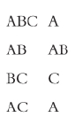
对三组成对选择进行比较显然可以发现，如果你的偏好关系是：
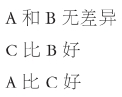
并且你总是选择最好的可选项，那么你就会照本例那样选择。也就是说，你的选择可以由偏好关系来解释。
看起来似乎所有选择（无论多么奇怪）都可以由某种偏好关系来解释。但事实并非如此。回到开胃菜的例子，你的选择是：
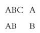
如果这些选择可以由偏好关系来解释，那么A至少得和B一样好，因为你从完整菜单中选择了A；而B得比A好，因为你从A和B之中选择了B。这两个结论不可能同时为真，因此没有任何偏好关系可以解释你的选择。
同样的结论也适用于汤的例子，在其中你的选择是：
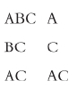
这里，A或B其中之一必然要比C好，因为你没有从完整菜单中选择C。但是A不可能比C好，因为你在A和C之间选了C，尽管不是唯一的。同样，B也不可能比C好，因为在B和C之间，你选了C。因此，在本例中同样没有任何偏好关系能够解释你的选择。
开胃菜和汤的例子说明：（1）如果缩约条件和扩展条件有其中之一（或者两个都）不能满足，也就是说，如果选择不是合理的，选择就无法由偏好关系来解释；（2）如果两个条件同时成立，也就是说，如果选择是合理的，选择就可以由偏好关系来解释。情况就是如此：当且仅当选择可以由偏好关系来解释时，它是合理的。
这意味着，如果选择是合理的，选择和偏好关系实质上是一样的：我们总是可以从偏好关系中推断出选择；也可以从选择中推断出偏好关系。
合理性是个很好的起点，但是正如我在介绍鱼的例子时说的，光有合理性还不够。在鱼的例子中，你的选择如下：
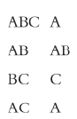
这里的问题是，在一种情形下你在有A时选择了B，而在另一种情形下你在有B时选择了A，并且没有同时选择B。我们可以这样来描述：第一种情形下，B显示出至少和A一样好，而在第二种情形下，A显示出比B好。为了避免类似问题，我们要求如果有第二个选项时你选择了第一个选项，那么任何时候当你选择了第二个选项而第一个选项同时存在时，你也应该选择第一个。这一要求被称为显性条件 ；又被称为“萨缪尔森的显示偏好条件”，得名于另一位诺贝尔经济学奖得主保罗·萨缪尔森（生于1915年）。类似的赛马例子如下：如果一匹小母马在有第二匹小母马参加的比赛中获胜，无论是独占鳌头或是并列第一，那么第二匹小母马在有第一匹小母马参加的任何比赛里都不可能单独获胜。
显而易见，显性条件同时涵盖了缩约条件和扩展条件。但是比如在鱼的例子中，正如我们所看到的，显性条件不成立，而缩约条件和扩展条件却成立。因此，显性条件强于缩约和扩展条件的总和。也就是说，任何满足显性条件的选择必然满足缩约条件和扩展条件，但满足这两个条件的选择却不一定满足显性条件。
显性条件有些苛刻：鱼的例子中的选择不满足显性条件。但也不是非常苛刻，正如下例所显示的，显性条件可以得到满足。
菜单由鳄鱼肉、牛肉、鸡肉和鸭肉组成。如果有鳄鱼肉，你就选它；如果没有鳄鱼肉但有牛肉，你就选牛肉；如果两者都没有，你就同时选鸡肉和鸭肉。如下图所示：
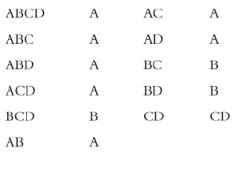
显而易见，在本例中你的选择满足显性条件。这意味着它们同时也满足缩约条件和扩展条件，因此是合理的。相应地，它们可以由偏好关系来表示：
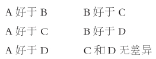
由于显性条件至少排除了我前面所提到的那些影响合理决定的问题，我要说，理性选择 的过程就是能满足显性条件的过程。
要概括理性选择的特点，我们要用到偏好序列 的概念。偏好序列是一种特殊的偏好关系，又被称为传递性 。对于某种“至少一样好”的关系，如果在X至少和Y一样好，且Y至少和Z一样好的情况下，可以得出X至少和Z一样好的结论，那么这种关系就具有传递性。例如，人与人之间“至少一样高”的关系就具有传递性：如果我至少和你一样高，而你至少和蒙莫朗西一样高，那么我至少和蒙莫朗西一样高。在肉的例子中所隐含的偏好关系具有传递性，因此是一种偏好序列。尽管传递性看似是偏好关系的自然属性，但实际上并非所有的偏好关系都具有传递性。例如在鱼的例子中，偏好关系如下：
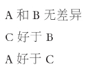
上述关系不具有传递性：假设它具有传递性，那么前两个陈述意味着C至少和A一样好，这个结论与最后一条陈述相矛盾。
之所以用偏好序列这个名称是因为它允许对选项进行排序（尽管其中可能出现并列）。这意味着我们可以将所有选项排列成表，最好的选项在顶部，最差的在底部。回到肉的例子中所隐含的偏好序列。依惯例用字母来代替选项，列表如下：
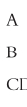
如果没有传递性，我们不可能将选项排成列表形式。比如在鱼的例子中所隐含的偏好关系，如果我们把A放到列表顶部，那么我们必须把B也放到顶部，因为A和B无差异；但我们不能把B放到顶部，因为C好于B；且我们也不能把C放到顶部，因为A好于C。因此我们无法将任何一个选项置顶，从而无法排成列表。
如果你的选择可以由具备传递性的偏好关系来解释，那么它就可以由偏好序列来解释 。（回想一下，偏好序列其实就是具有传递性的偏好关系。）如我们所见，在鱼的例子中隐含在选择背后的偏好关系（它不满足显性条件）不具备传递性，从而这些选择无法由偏好序列来解释。另一方面，在肉的例子中所作的选择（满足显性条件）则可以由偏好序列来解释。
肉和鱼的例子说明：（1）如果显性条件不满足（即选择是非理性的），选择就无法由偏好序列来解释；（2）如果显性条件满足（即选择是理性的），选择就可以由偏好序列来解释。情况就是如此：当且仅当选择可以由偏好序列来解释时，它是理性的。
图4《思想者》：选择是深思熟虑的欲望（奥古斯特·罗丹，1904）
这意味着，如果选择是理性的，选择和偏好序列实质上是一样的。确实，我们可以把选择之中所隐含的偏好序列看做作出该选择的理由：在理由和理性之间存在紧密联系：“选择是深思熟虑的欲望。”
正如理性选择可以由偏好序列表示，偏好序列也同样可以由效用来表示。要用效用来表示像“至少一样好”这样的序列，就是要为每个选项指派相应的数字，更好的选项分配到更大的数字。更确切地说，当且仅当第一个选项比第二个更好时，它具有更高的效用。对于肉的例子中所隐含的偏好序列，即
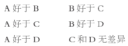
我们可以指派效用如下：
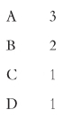
这样的指派很有帮助。它说明我们总是可以通过列表来为某个偏好序列指派效用，把数字1分配给最底部的单个或多个选项，数字2给倒数第二个选项，依此类推直到列表顶部。确实，情况显然就是如此：我们总是可以通过效用来表示偏好序列。这一论述也清楚地表明：我们无法用效用来表示一个无法由偏好序列来表示的偏好关系（即非传递性），因为在这种情况下我们无法完成列表。
有许多种其他方式来指派效用。在本例中，另一种可行的效用指派方式是：
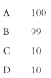
在这些方式中，没有任何一个好于其他的。它们都意味着，并且仅仅意味着一件事：A好于其他选项；B好于C和D；C和D无差异。因此，本例中所用到的效用在此意义上被称为序数 效用 ：它所做的一切就是为选项排序。序数效用可以通过任何增加数值的方式进行转换而不影响其代表性属性，例如（假设效用都是正的），通过求二次幂或者取平方根。
如果对于某些效用指派方式来说，你所选择的选项恰好是那些至少和其他任何一个选项有同样多效用的选项，那么你的选择就是效用最大化 的。在这种情况下，选择使效用达到最大。显然，只有当选择可以由偏好序列表示时，这种情况才成立。因为如果不存在偏好序列，也就没有效用指派；而如果选择由偏好序列表示，那么它们必须做到效用最大化。换句话说，当且仅当选择可以由偏好序列来解释时，它取得效用最大化。那么既然当且仅当选择可以由偏好序列来解释时它是理性的，我们可以说，当且仅当选择是效用最大化时，它是理性的。
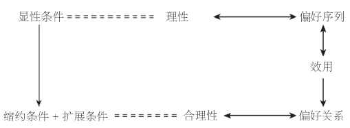
图5确定条件下的选择示意图：等号代表定义，双箭头代表相等，单箭头代表隐含
从形式上看，作出理性选择可以等同于效用最大化。但是关键是如何来解释这种等同关系。你在X和Y之间只选择X，说明你喜欢X胜过Y，并且如果你喜欢X胜过Y，你指派给X的效用就多于给Y的效用。效用源自选择，而不是选择源自效用。你不是因为骑马比滑雪带给你更多效用才选择去骑马。正相反，因为你选择了骑马，所以你指派给骑马更多的效用。
合理性、理性和本章中提出的各种条件之间的联系如图5所示。
如果时间成为相关因素，情况也几乎没有改变。许多选择涉及时间，但时间并没有起到重要作用。试考虑这样一个例子：今天来选今天和明天分别吃什么。尽管这个选择涉及时间，但它可以立刻被纳入一个静态的框架。唯一的区别在于，你不再是从X和Y两个选项，而是从四个选项中进行选择：
今天选X且明天选X
今天选X且明天选Y
今天选Y且明天选X
今天选Y且明天选Y
但是，并非所有选择都适合这种模式。某个人（如果不是瑞顿这样的瘾君子）会远离海洛因，因为知道如果今天吸食了海洛因，明天他就会变成毒品的奴隶。更普遍的情况是，今天你会选择“今天选X且明天选Y”，但你知道如果今天得到X，你的偏好会发生变化，以至于明天也希望得到X。本质上，这就是荷马（约公元前700年）笔下的英雄尤利西斯所面临的问题。他让手下把自己绑在船的桅杆上，以避免他在听到海妖具有魔力的甜美歌声后想要不惜生命去追随那充满诱惑力的声音。本例中所讨论的静态理论无法处理这类问题。
即使在一个静态框架里，也不是所有问题都能直接解答。试考虑一个明显的悖论，通常称之为框架悖论。你在一家店里，已经决定要买一台标价20美元的电话和一台1000美元的电脑。首先，你得知在相距五分钟步行路程的另外一家分店里，电话要比这家店便宜10美元：你是现在买，还是去另外一家分店？其次，你得知电脑（而不是电话）在另外一家分店要便宜10美元：你是现在买，还是去另外一家分店？暂停一下，好好想想。
显然你在这两种情况下会作出相同选择，因为本质上两个问题是一样的，区别只在于问题的框架：在这两种情况下，你都可以通过去另外一家分店购买商品而节省10美元。但在一次实验中，被问到这个问题的人们绝大多数愿意在电话而不是电脑便宜10美元的情况下去另外一家店。在第一章里我已经注意到类似的悖论可能产生的种种反应。对这个例子，你也应该有自己的回答。
效用可以通过任何增加其数值的方式转换而不会影响其代表属性，这一事实隐含着一个重要推论：对效用的变化量进行比较毫无意义。试考虑这样的说法：1000美元与2000美元之间的效用差别大于8000美元和9000美元之间的效用差别。这等于说，在1000美元基础上增加1000美元，比在8000美元基础上增加1000美元带来更高效用；或者说，当你贫穷的时候，得到1000美元所带给你的边际效用 大于你富裕的时候。类似这样的说法无所谓对或错：它们毫无意义。
假定人们喜欢更多财富，而不是更少，那么分配效用的方法之一就是给一定数额的金钱（以1000美元为单位）指派相同数目的效用。第二种方法是指派与金钱数额的平方根相等的效用。第三种方法是指派与金钱数额的平方数相等的效用。当然，这三种方法都同样好。
如果以等于金钱数额平方根的方式来指派效用，那么关于1000美元和2000美元的效用差额大于8000美元和9000美元的效用差额的说法貌似正确，因为两种情况下的边际效用分别约等于0.4和0.2。而如果效用以等于金钱数额平方数的方式来指派，那么这种说法貌似错误，因为两种情况下的边际效用分别约等于17和3。但是这两种指派效用的方式本身一样好：上述两次计算没有任何意义。
类似于上例中的错误想法是因为混淆了正确的表述“人们为更多财富指派更高效用，因为人们偏好更多财富”和无意义的表述“人们偏好更多财富，因为它具有更高效用”。这样的错误想法所带来的结果之一就是要求财富再分配，比如通过征收累进税的办法。所谓的财富再分配是基于这样的想法，即一个穷人接受1000美元所得到的效用大于一个富人支付1000美元所失去的效用。同样，这一想法毫无意义。此外，试图在没有依据的情况下对不同人的效用进行比较，这种做法更加剧了混淆的程度。我们没有理由反对采用平方根的方式来为每个人指派效用。但如果我们这样做，那么你的效用水平是我的两倍这一事实仅仅说明了我们已经知道的情况：你的财富是我的四倍，仅此而已。效用并不是幸福或福利的衡量尺度：它只是偏好的数字化表示。
确定性条件下的选择涉及从给定的候选菜单中选择一个或多个限定选项。
缩约条件要求：如果你从候选菜单中选择了某个选项，并且在范围缩小后的菜单内依然含有该选项，那么你应该从小范围菜单中选择该选项。
扩展条件要求：如果你在某个选项与候选菜单的任何一个其他选项之间进行成对选择时都选了该选项，那么你应该从完整菜单中选择该选项，尽管不一定是唯一的。
如果存在某种“至少一样好”关系，使得你所选的选项恰好就是那些至少和菜单上剩余的任何选项一样好的选项，那么你的选择可以由偏好关系来解释。
当且仅当选择可以由偏好关系解释时，该选择是合理的，即它同时满足缩约条件和扩展条件。
显性条件要求：如果你在存在第二个选项的情况下选择第一个选项，那么任何时候你选择第二个选项，如果第一个选项也存在，你应该同时选择该选项。
如果选择可以由具备传递性的偏好关系解释，那么该选择可以由偏好序列解释。
当且仅当选择可以由偏好序列解释时，该选择是理性的，即满足显性条件。
用效用来表示一个“至少一样好”序列，就是为每个选项指派一个数字，使得当且仅当第一个选项比第二个更好时，它具有更高效用。如果存在某种效用指派方式，使得你所选择的选项恰好就是那些至少和其他选项具有一样高效用的选项，那么你的选择是效用最大化的。
当且仅当选择是效用最大化时，该选择是理性的。